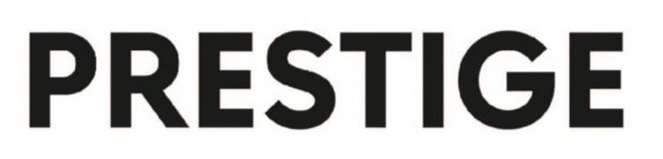
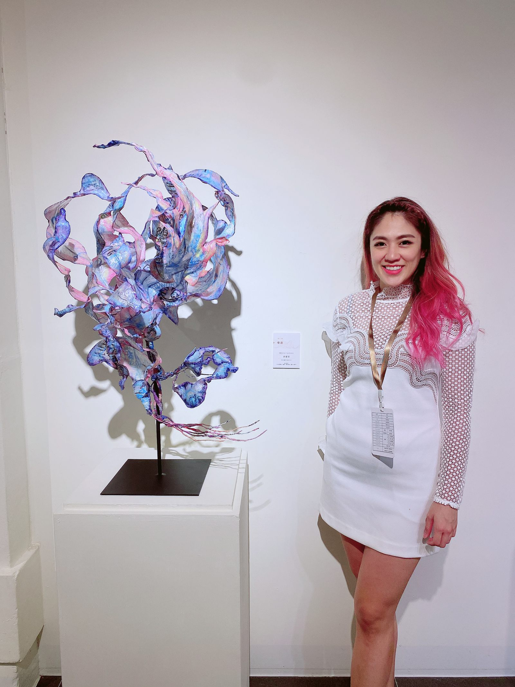
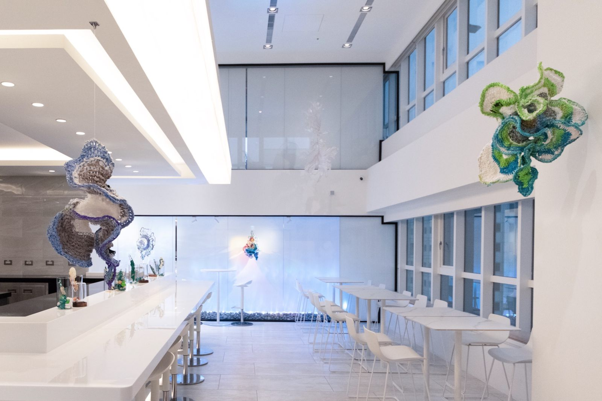
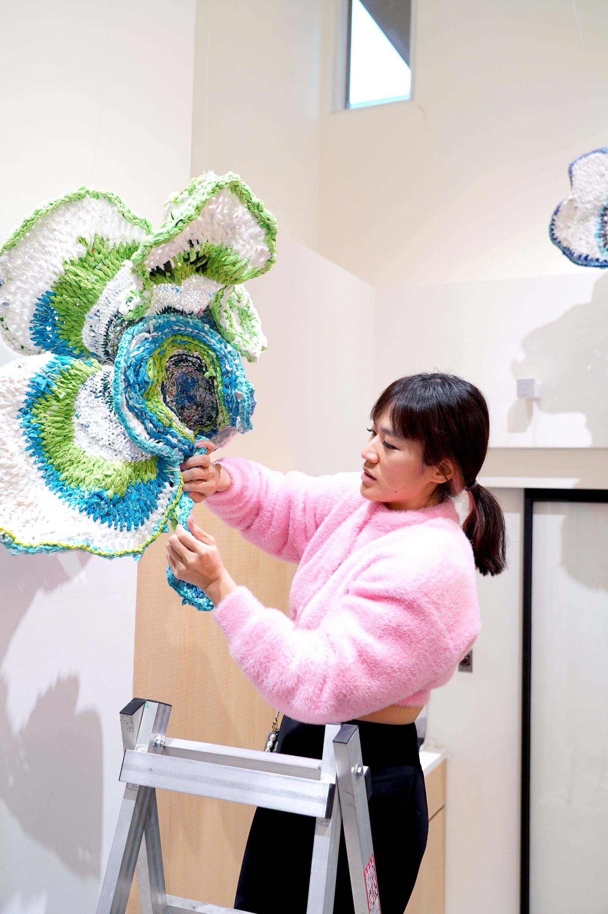
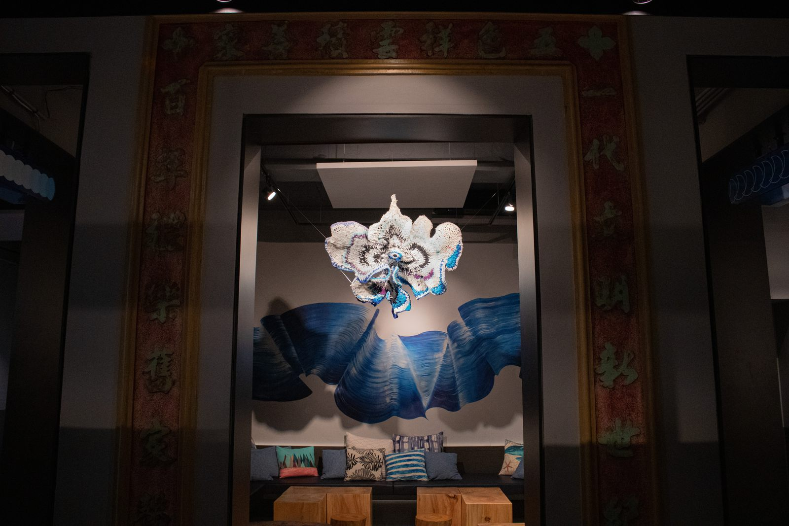
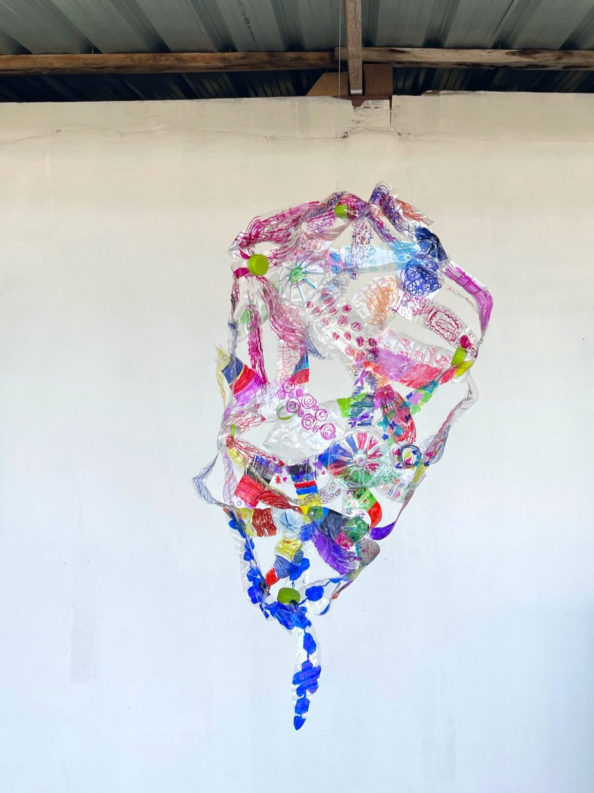

文章轉載自 Prestige
BY AILING TSAI

作為使用回收材創作的新銳藝術家 Julia Hung 洪郁雯，以自己獨到的思想將一般人認為的「垃圾」賦予其不同的價值，透過向社會大眾拋出的疑問，遊走在廢棄物與藝術品間的界線，Julia 想傳達的是界定價值的選擇權，是跟隨自我的內心而不是社會加諸的思想，希望透過她的作品讓更多人了解永續與環保的重要性。

永續環保的議題早已遍佈在各大領域，而在藝術的世界中，我們藉由 Julia Hung 洪郁雯的視角，窺探了由回收材打造出的宏觀宇宙。同時也很好奇最一開始使用回收材創作的契機是什麼？「當初使用回收材，其實是想探討當今社會的價值觀，在消費主義盛行的時代，很多時候對事物的看法都被侷限在金錢的價值和實質的用處上，而忽略了真正無法被量化的意義。」這也是 Julia 想對如今社會提出的疑問，加上看過姚謙的一部紀錄片《一個人的收藏》，裏頭的一句玩笑話「賣不出去的藝術品就是垃圾。」更加深了將回收材化為藝術品的念想。
回收材作品的開端
在下定決心的瞬間，專屬於 Julia 源源不絕的熱情與好奇心也被無限放大，她開始投入大量心思研究了許多有關回收材的資訊，同時也發現了消費主義對自然及人文藝術都造成了遠超出我們想像的傷害，而且在人們不自覺的情況下，正影響著我們的日常。因此她在每一件作品中都投射出她想傳達的疑問，「我認為在自然界中的每個事物都是有存在的意義，所以我做的第一件作品就叫做『仿生』，也就是仿造自然，運用廢棄的塑膠袋，編織出自然型態的有機雕塑品。」這些舊衣服、塑膠袋、寶特瓶等大家第一反應認為是垃圾的消費後廢棄物，在轉化成一件件雕塑藝術品後，最終又該如何界定何謂垃圾何謂藝術呢？

Julia Hung 洪郁雯，仿生Biomimicry，複合媒材（回收塑膠袋, 環氧樹脂, 鐵絲）
從合作夥伴中自我省思
接續著這樣的疑問 Julia 接觸了更多同樣重視永續議題的合作夥伴，在與結合藝術、生態、飲食的實驗性空間 The Seedin Lab「我吃了一個展覽」共同展出時，她感受到身為台灣島民的身分認同感，這樣小小一座島，四周皆圍繞著大海，漁民靠著大海生存，而我們卻也同時在傷害這片汪洋，Julia 了解到了永續漁業的重要性，以及海洋正面臨的石油污染、過度捕撈、全球暖化及水資源浪費等深刻議題。因此她創造了「殘骸Debris」系列作品，運用了勾針的編織技巧將舊衣料、寶特瓶以及塑膠袋相互連結，更在其中加入了白色部分，象徵珊瑚因人為汙染而逐漸白化，也供人們省思是否在群眾效應之下，我們也逐漸失去自我的色彩，遺忘了自己也是在這個環境生活的一分子。


Julia 在小琉球舉辦「海島之森」的展覽及工作坊，在這次的經驗中她發現了社群凝聚力的重要性。「我發現這裡的許多店家有提供借用環保餐具的選項，透過一個小小的舉動，可以影響到整個社區的習慣，將環保的概念融入日常，我想如果可以推廣到其他區域，就可以創造更永續的飲食文化。」而在每一次不同的合作中，都讓 Julia 拓展出全新的視野，相互學習、用心體悟，同時也帶給自己獨特且嶄新的創作思維，讓她的藝術創作形成一個正向的循環。

2023海島之森展場照 Image: Julia Hung 提供
迎面而來的挑戰
當然在回收材的創作過程中 Julia 也遇到了較難克服的挑戰，首先是回收材的創作與清理，還要加上實驗媒材的過程，都需要花費龐大的心力、人力與時間成本。尤其在製作燈會作品「星光潮來」時，高四公尺寬六公尺的巨型裝置藝術，讓她一開始在提議用回收材來創作時就遭到許多質疑，「當時沒有廠商願意幫我用回收塑膠袋來製作，他們覺得這不符合經濟效益，同時也勸我放棄。但我還是覺得這是可能做到的，直到後來微遠虎山基金會贊助了我場地，我的好朋友們也義不容辭地來幫忙，最後成功完成時的感動，到現在都很難忘。」當理想的藍圖完成的瞬間，過程中的一切辛苦也都值得了。而在回收材作品中，Julia 也時常會刻意留下回收材料的痕跡，像是塑膠袋上的 logo，舊衣的扣子、標籤等，不僅保留住物件本身的意義同時也延續創作者想傳達的初衷——動搖現今消費主義所帶來的價值觀。

2019 Dreamy Tide 星光潮來 Image: Julia Hung 提供
藉由「共創」傳遞永續思想
「一個人也許無法完成，但如果可以聚集大家的力量，就可以完成看似不可能的任務。」Julia 從一次次經驗中突破自我，也將這樣的理念帶到位於金三角的孤兒院中，受到明德國小校長 Julia Yeh 的邀請，加入了這次意義非凡的「葵光共創計畫」。「我帶領著當地的小朋友們，把回收寶特瓶創作成一件件的懸掛雕塑。希望他們能感受到，一個人的價值，並不是由別人來定義，就好像這些寶特瓶一樣，我們可以透過想像力和創造力來重新開創自己的價值。我覺得這不只是環保永續的議題，而是讓大家重新也『從心』去看待所謂的價值，或許當我們更珍視所有的資源時，很多永續跟環保的理想就可以實現。」經由共創帶來的影響，遠遠超出一個人的想像，在製作過程中的共情與共感激發出彼此原以為自己無法做到的成就，也讓 Julia 更加確信小小的理念，可以像一滴小水滴一般，掀起層層漣漪，慢慢擴散開來。未來 Julia 也希望透過「共創」的思維與作法，持續創作更多關於永續與環保的回收材雕塑，將這份思想與感動帶給更多人。

與葵光學生中心的小朋友共創的作品 Image: Julia Hung 提供